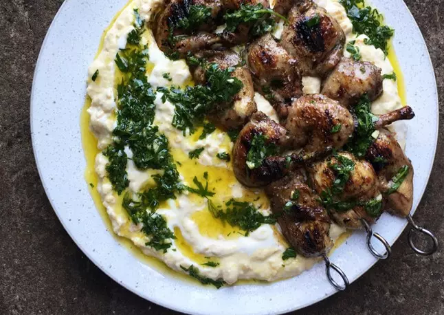

Hummus with grilled quail, pomegranate molasses and parsley salsa

Serves: 4 | Prep Time: 5 Minutes | Marinade Time: 2 Hours | Cook Time: 40 minutes
Ingredients
- 2 tbsp olive oil
- 1½ tsp ground allspice
- 1½ tbsp pomegranate molasses, plus ½ tbsp to serve
- 1½ tbsp soy sauce
- 1 tsp lemon zest
- 2 garlic cloves, peeled and minced
- 1 tsp maple syrup
- 2 thyme sprigs
- Flaked kosher salt and blake pepper
- 4 quail (1kg), breasts taken off the bone, legsa nd thighs cut off in one piece
For the parsley salsa:
- 10g parsley leaves, finely chopped
- 1 garlic clove, peeled and minced
- 2 tbsp olive oil
- 1 lemon - zest finely grated, to get ½ tbsp, then juiced, to get 1 tbsp
For the hummus:
- 300g freshly cooked chickpeas
- 1 garlic clove, peeled and crushed
- 1 lemon - zest finely grated, to get 2 tbsp, then juiced, to get 1 tbsp
- 1 tbsp olive oil
- 100g greek yoghurt
- Flaked kosher salt and black pepper
Method
- Mix the first eight ingredients in a large container with a teaspoon and a half of flaked salt and plenty of pepper.
- Put the quail in the marinade, mix everything together, then leave to marinate for two hours at room temperature (or in the fridge overnight). Thread two breasts and two legs/thighs on to each skewer. Discard the thyme.
- Mix all the salsa ingredients with a generous pinch of flaked salt and a good grind of pepper.
- Put two thirds of the chickpeas in a food processor with the garlic, lemon zest, lemon juice, oil, 80g yoghurt and a quarter-teaspoon of flaked salt, and blitz smooth. Transfer to a saucepan and set aside.
- Heat a griddle pan on a high heat until very hot. Lay in the skewers skin side down and grill for five minutes on each side, until crisp and golden brown, then leave to rest for five minutes.
- Put the pan of chickpeas on a medium-high heat with the remaining 100g whole chickpeas and gently heat for a few minutes, until warm. Transfer to a platter with a lip and stir in the remaining 20g yoghurt, so you have streaks of yoghurt through the chickpeas.
- Arrange the quail skewers on top of the hummus. Spoon on the salsa, finish with a drizzle of pomegranate molasses and serve.